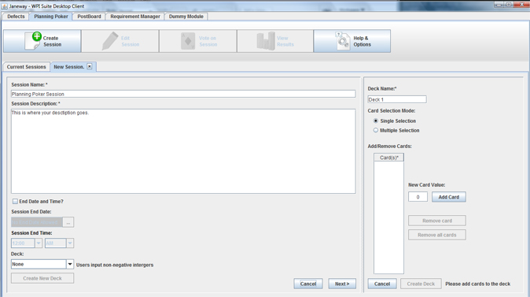

Creating a New Deck
When the New Deck button is clicked, a deck creation panel will be annexed onto the side of the
panel you were currently working on.
Inside of the deck creation pane, you need to set a deck name, and make a list of cards to put in the deck.
You may put in any positive, non-decimal number, then click add. This will add that value to the
list of cards in your deck. You may add from 1 to as many cards as you wish to have in your deck.
Once you are satisfied with your new deck, you can click save. At any point, you can also click
cancel and the pane will close, but your information will be saved in case you wish to continue
creating that particular deck.

In addition, you can create new decks from within the Help & Options panel. Where you see Help, in the
top right drop down box, currently, you click and select Deck options.
You would create a deck as normal in this panel, but can also view other decks already in the system.
If you create a deck within the session creation panel, that deck will automatically become your deck
selection, but can be changed if you wish to use a different deck, or no deck at all.